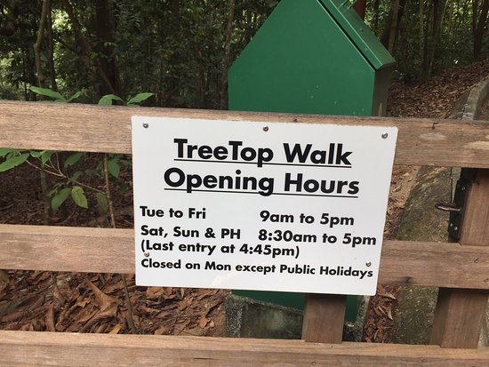
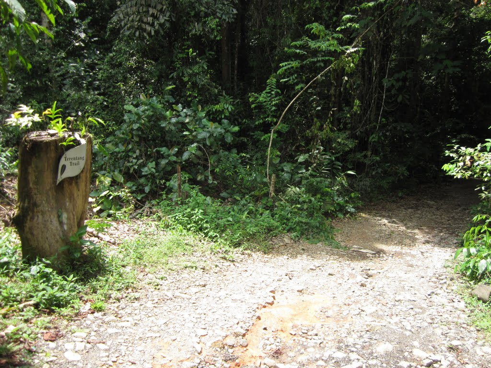

Looking for a place to spend your time outdoors? Here’s one for the heartlanders.
The TreeTop Walk (TTW) is the highlight of several long hiking routes in MacRitchie that brings you through the different stages of a mature secondary forest.
The first of its kind in Singapore and in the region, this free-standing suspension bridge connects the two highest points (Bukit Peirce and Bukit Kalang) in MacRitchie
and offers a bird's eye view of the community of plants and animals that live in the forest canopy. The total length of the walkway is about 250 m and its height
from the forest floor varies, with the highest point at 25 m.
The trail opens at 9AM - 5PM on weekdays & 8:30AM - 5PM on weekends. The trail is closed on Mondays except during Public Holidays.

The TreeTop Walk gate closes at 5pm sharp. Visitors are advised to start hiking towards the bridge by 4.45pm from Ranger Station to avoid disappointment.
The TreeTop Walk is free for everyone to experience. Unfortunately, visitors are not allowed to bring pets with them on the trail. This trail is not suitable for
pregnant ladies, young children and the disabled. People with a fear of heights or who have a pre-existing heart condition should also not attempt this trail.
There are two ways you can get to the TreeTop Walk, either by bus or by car.
By Bus: Take bus number 52, 132, 163, 166, 167, 855 and 980 and alight just outside ESSO station before the junction of Venus Drive, Upper Thomson Road and Sin Ming Avenue.
By Car: Park at the public car park at Venus Drive that is located beside the start of the trail.
The starting point of this trail is from Venus Drive, proceed ahead!
From here, trekkers can enter Windsor Nature Park and follow the boardwalks (Venus Loop, Squirrel Trail and then Drongo Trail)
toward the TreeTop Walk. You will head past quaint freshwater streams and a marshland ecosystem along the way.

Eventually, the trail from Windsor Nature Park joins up with the Terentang Trail. Along the Terentang Trail, you will find the Terentang
Hut and the Ranger Station with toilet facilities. Once you have taken a rest, it is time for the final push to reach the TreeTop Walk.
Follow the Peirce Track and you will make your way up to the start of the TreeTop Walk and its suspension bridge. You are here!
This is the guide to TreeTop Walk!


Be prepared to hike at least 7km as a round trip including the TreeTop Walk is about 7 km to 10 km (3-5 hrs depending on your walking pace). The terrain for
for this trail is undulating with steep slopes at certain points. The trail is designed for visitors to walk in one direction especially while on the bridge. From the
suspension bridge, you can delight in having a bird's eye view of the forest canopy and try to spot different wildlife in their natural habitat.
Enter the nature reserves and you will be wowed by the amazing biodiversity within. Stroll along the boardwalks and observe the wildlife with a careful eye and
quiet demeanour, and you might just be able to capture a few good shots. However, do note that the door at the end of the bridge only opens from the inside, so once
you're out, you can't go back in. So before you step out, check your camera and make sure you've got all the shots you want and are happy with all of them.
Birds are hidden treasures of the nature reserve. Armed with a pair of keen eyes and binoculars, you will be pleasantly surprised by the number of species you can spot
along the trails. TreeTop Walk are great spots for bird-watching.
Watch a short video to get a feel of it!
Ignore the video if you want to have a first hand experience of TreeTop Walk!
Enjoy your time there!